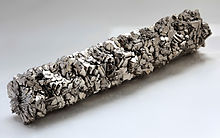

Titanium
|  | |||||||||||||||||||||||||||||||||||||||||||||||||||||||||||||||||||||||||||||||||||||||||||||||||||||||||||||||||||||||||||||||||||||||||||||||||||||||||||||||||||||||||||||||||||||||||||||||||||||||||||||||||||||||||||||||||||||
| General properties | |||||||||||||||||||||||||||||||||||||||||||||||||||||||||||||||||||||||||||||||||||||||||||||||||||||||||||||||||||||||||||||||||||||||||||||||||||||||||||||||||||||||||||||||||||||||||||||||||||||||||||||||||||||||||||||||||||||
|---|---|---|---|---|---|---|---|---|---|---|---|---|---|---|---|---|---|---|---|---|---|---|---|---|---|---|---|---|---|---|---|---|---|---|---|---|---|---|---|---|---|---|---|---|---|---|---|---|---|---|---|---|---|---|---|---|---|---|---|---|---|---|---|---|---|---|---|---|---|---|---|---|---|---|---|---|---|---|---|---|---|---|---|---|---|---|---|---|---|---|---|---|---|---|---|---|---|---|---|---|---|---|---|---|---|---|---|---|---|---|---|---|---|---|---|---|---|---|---|---|---|---|---|---|---|---|---|---|---|---|---|---|---|---|---|---|---|---|---|---|---|---|---|---|---|---|---|---|---|---|---|---|---|---|---|---|---|---|---|---|---|---|---|---|---|---|---|---|---|---|---|---|---|---|---|---|---|---|---|---|---|---|---|---|---|---|---|---|---|---|---|---|---|---|---|---|---|---|---|---|---|---|---|---|---|---|---|---|---|---|---|---|---|---|---|---|---|---|---|---|---|---|---|---|---|---|---|---|---|
| Name, symbol | titanium, Ti | ||||||||||||||||||||||||||||||||||||||||||||||||||||||||||||||||||||||||||||||||||||||||||||||||||||||||||||||||||||||||||||||||||||||||||||||||||||||||||||||||||||||||||||||||||||||||||||||||||||||||||||||||||||||||||||||||||||
| Pronunciation | /taɪˈteɪniəm/ ty-TAY-nee-əm |
||||||||||||||||||||||||||||||||||||||||||||||||||||||||||||||||||||||||||||||||||||||||||||||||||||||||||||||||||||||||||||||||||||||||||||||||||||||||||||||||||||||||||||||||||||||||||||||||||||||||||||||||||||||||||||||||||||
| Appearance | silvery grey-white metallic | ||||||||||||||||||||||||||||||||||||||||||||||||||||||||||||||||||||||||||||||||||||||||||||||||||||||||||||||||||||||||||||||||||||||||||||||||||||||||||||||||||||||||||||||||||||||||||||||||||||||||||||||||||||||||||||||||||||
| Titanium in the periodic table | |||||||||||||||||||||||||||||||||||||||||||||||||||||||||||||||||||||||||||||||||||||||||||||||||||||||||||||||||||||||||||||||||||||||||||||||||||||||||||||||||||||||||||||||||||||||||||||||||||||||||||||||||||||||||||||||||||||
|
|||||||||||||||||||||||||||||||||||||||||||||||||||||||||||||||||||||||||||||||||||||||||||||||||||||||||||||||||||||||||||||||||||||||||||||||||||||||||||||||||||||||||||||||||||||||||||||||||||||||||||||||||||||||||||||||||||||
| Atomic number | 22 | ||||||||||||||||||||||||||||||||||||||||||||||||||||||||||||||||||||||||||||||||||||||||||||||||||||||||||||||||||||||||||||||||||||||||||||||||||||||||||||||||||||||||||||||||||||||||||||||||||||||||||||||||||||||||||||||||||||
| Standard atomic weight (±) | 47.867(1)[1] | ||||||||||||||||||||||||||||||||||||||||||||||||||||||||||||||||||||||||||||||||||||||||||||||||||||||||||||||||||||||||||||||||||||||||||||||||||||||||||||||||||||||||||||||||||||||||||||||||||||||||||||||||||||||||||||||||||||
| Element category | transition metal | ||||||||||||||||||||||||||||||||||||||||||||||||||||||||||||||||||||||||||||||||||||||||||||||||||||||||||||||||||||||||||||||||||||||||||||||||||||||||||||||||||||||||||||||||||||||||||||||||||||||||||||||||||||||||||||||||||||
| Group, block | group 4, d-block | ||||||||||||||||||||||||||||||||||||||||||||||||||||||||||||||||||||||||||||||||||||||||||||||||||||||||||||||||||||||||||||||||||||||||||||||||||||||||||||||||||||||||||||||||||||||||||||||||||||||||||||||||||||||||||||||||||||
| Period | period 4 | ||||||||||||||||||||||||||||||||||||||||||||||||||||||||||||||||||||||||||||||||||||||||||||||||||||||||||||||||||||||||||||||||||||||||||||||||||||||||||||||||||||||||||||||||||||||||||||||||||||||||||||||||||||||||||||||||||||
| Electron configuration | [Ar] 3d2 4s2 | ||||||||||||||||||||||||||||||||||||||||||||||||||||||||||||||||||||||||||||||||||||||||||||||||||||||||||||||||||||||||||||||||||||||||||||||||||||||||||||||||||||||||||||||||||||||||||||||||||||||||||||||||||||||||||||||||||||
| per shell | 2, 8, 10, 2 | ||||||||||||||||||||||||||||||||||||||||||||||||||||||||||||||||||||||||||||||||||||||||||||||||||||||||||||||||||||||||||||||||||||||||||||||||||||||||||||||||||||||||||||||||||||||||||||||||||||||||||||||||||||||||||||||||||||
| Physical properties | |||||||||||||||||||||||||||||||||||||||||||||||||||||||||||||||||||||||||||||||||||||||||||||||||||||||||||||||||||||||||||||||||||||||||||||||||||||||||||||||||||||||||||||||||||||||||||||||||||||||||||||||||||||||||||||||||||||
| Phase | solid | ||||||||||||||||||||||||||||||||||||||||||||||||||||||||||||||||||||||||||||||||||||||||||||||||||||||||||||||||||||||||||||||||||||||||||||||||||||||||||||||||||||||||||||||||||||||||||||||||||||||||||||||||||||||||||||||||||||
| Melting point | 1941 K (1668 °C, 3034 °F) | ||||||||||||||||||||||||||||||||||||||||||||||||||||||||||||||||||||||||||||||||||||||||||||||||||||||||||||||||||||||||||||||||||||||||||||||||||||||||||||||||||||||||||||||||||||||||||||||||||||||||||||||||||||||||||||||||||||
| Boiling point | 3560 K (3287 °C, 5949 °F) | ||||||||||||||||||||||||||||||||||||||||||||||||||||||||||||||||||||||||||||||||||||||||||||||||||||||||||||||||||||||||||||||||||||||||||||||||||||||||||||||||||||||||||||||||||||||||||||||||||||||||||||||||||||||||||||||||||||
| Density near r.t. | 4.506 g·cm−3 | ||||||||||||||||||||||||||||||||||||||||||||||||||||||||||||||||||||||||||||||||||||||||||||||||||||||||||||||||||||||||||||||||||||||||||||||||||||||||||||||||||||||||||||||||||||||||||||||||||||||||||||||||||||||||||||||||||||
| when liquid, at m.p. | 4.11 g·cm−3 | ||||||||||||||||||||||||||||||||||||||||||||||||||||||||||||||||||||||||||||||||||||||||||||||||||||||||||||||||||||||||||||||||||||||||||||||||||||||||||||||||||||||||||||||||||||||||||||||||||||||||||||||||||||||||||||||||||||
| Heat of fusion | 14.15 kJ·mol−1 | ||||||||||||||||||||||||||||||||||||||||||||||||||||||||||||||||||||||||||||||||||||||||||||||||||||||||||||||||||||||||||||||||||||||||||||||||||||||||||||||||||||||||||||||||||||||||||||||||||||||||||||||||||||||||||||||||||||
| Heat of vaporization | 425 kJ·mol−1 | ||||||||||||||||||||||||||||||||||||||||||||||||||||||||||||||||||||||||||||||||||||||||||||||||||||||||||||||||||||||||||||||||||||||||||||||||||||||||||||||||||||||||||||||||||||||||||||||||||||||||||||||||||||||||||||||||||||
| Molar heat capacity | 25.060 J·mol−1·K−1 | ||||||||||||||||||||||||||||||||||||||||||||||||||||||||||||||||||||||||||||||||||||||||||||||||||||||||||||||||||||||||||||||||||||||||||||||||||||||||||||||||||||||||||||||||||||||||||||||||||||||||||||||||||||||||||||||||||||
vapor pressure
|
|||||||||||||||||||||||||||||||||||||||||||||||||||||||||||||||||||||||||||||||||||||||||||||||||||||||||||||||||||||||||||||||||||||||||||||||||||||||||||||||||||||||||||||||||||||||||||||||||||||||||||||||||||||||||||||||||||||
| Atomic properties | |||||||||||||||||||||||||||||||||||||||||||||||||||||||||||||||||||||||||||||||||||||||||||||||||||||||||||||||||||||||||||||||||||||||||||||||||||||||||||||||||||||||||||||||||||||||||||||||||||||||||||||||||||||||||||||||||||||
| Oxidation states | 4, 3, 2, 1[2] (an amphoteric oxide) | ||||||||||||||||||||||||||||||||||||||||||||||||||||||||||||||||||||||||||||||||||||||||||||||||||||||||||||||||||||||||||||||||||||||||||||||||||||||||||||||||||||||||||||||||||||||||||||||||||||||||||||||||||||||||||||||||||||
| Electronegativity | Pauling scale: 1.54 | ||||||||||||||||||||||||||||||||||||||||||||||||||||||||||||||||||||||||||||||||||||||||||||||||||||||||||||||||||||||||||||||||||||||||||||||||||||||||||||||||||||||||||||||||||||||||||||||||||||||||||||||||||||||||||||||||||||
| Ionization energies | 1st: 658.8 kJ·mol−1 2nd: 1309.8 kJ·mol−1 3rd: 2652.5 kJ·mol−1 (more) |
||||||||||||||||||||||||||||||||||||||||||||||||||||||||||||||||||||||||||||||||||||||||||||||||||||||||||||||||||||||||||||||||||||||||||||||||||||||||||||||||||||||||||||||||||||||||||||||||||||||||||||||||||||||||||||||||||||
| Atomic radius | empirical: 147 pm | ||||||||||||||||||||||||||||||||||||||||||||||||||||||||||||||||||||||||||||||||||||||||||||||||||||||||||||||||||||||||||||||||||||||||||||||||||||||||||||||||||||||||||||||||||||||||||||||||||||||||||||||||||||||||||||||||||||
| Covalent radius | 160±8 pm | ||||||||||||||||||||||||||||||||||||||||||||||||||||||||||||||||||||||||||||||||||||||||||||||||||||||||||||||||||||||||||||||||||||||||||||||||||||||||||||||||||||||||||||||||||||||||||||||||||||||||||||||||||||||||||||||||||||
| Miscellanea | |||||||||||||||||||||||||||||||||||||||||||||||||||||||||||||||||||||||||||||||||||||||||||||||||||||||||||||||||||||||||||||||||||||||||||||||||||||||||||||||||||||||||||||||||||||||||||||||||||||||||||||||||||||||||||||||||||||
| Crystal structure | hexagonal close-packed (hcp)
|
||||||||||||||||||||||||||||||||||||||||||||||||||||||||||||||||||||||||||||||||||||||||||||||||||||||||||||||||||||||||||||||||||||||||||||||||||||||||||||||||||||||||||||||||||||||||||||||||||||||||||||||||||||||||||||||||||||
| Speed of sound thin rod | 5090 m·s−1 (at r.t.) | ||||||||||||||||||||||||||||||||||||||||||||||||||||||||||||||||||||||||||||||||||||||||||||||||||||||||||||||||||||||||||||||||||||||||||||||||||||||||||||||||||||||||||||||||||||||||||||||||||||||||||||||||||||||||||||||||||||
| Thermal expansion | 8.6 µm·m−1·K−1 (at 25 °C) | ||||||||||||||||||||||||||||||||||||||||||||||||||||||||||||||||||||||||||||||||||||||||||||||||||||||||||||||||||||||||||||||||||||||||||||||||||||||||||||||||||||||||||||||||||||||||||||||||||||||||||||||||||||||||||||||||||||
| Thermal conductivity | 21.9 W·m−1·K−1 | ||||||||||||||||||||||||||||||||||||||||||||||||||||||||||||||||||||||||||||||||||||||||||||||||||||||||||||||||||||||||||||||||||||||||||||||||||||||||||||||||||||||||||||||||||||||||||||||||||||||||||||||||||||||||||||||||||||
| Electrical resistivity | 420 nΩ·m (at 20 °C) | ||||||||||||||||||||||||||||||||||||||||||||||||||||||||||||||||||||||||||||||||||||||||||||||||||||||||||||||||||||||||||||||||||||||||||||||||||||||||||||||||||||||||||||||||||||||||||||||||||||||||||||||||||||||||||||||||||||
| Magnetic ordering | paramagnetic | ||||||||||||||||||||||||||||||||||||||||||||||||||||||||||||||||||||||||||||||||||||||||||||||||||||||||||||||||||||||||||||||||||||||||||||||||||||||||||||||||||||||||||||||||||||||||||||||||||||||||||||||||||||||||||||||||||||
| Young's modulus | 116 GPa | ||||||||||||||||||||||||||||||||||||||||||||||||||||||||||||||||||||||||||||||||||||||||||||||||||||||||||||||||||||||||||||||||||||||||||||||||||||||||||||||||||||||||||||||||||||||||||||||||||||||||||||||||||||||||||||||||||||
| Shear modulus | 44 GPa | ||||||||||||||||||||||||||||||||||||||||||||||||||||||||||||||||||||||||||||||||||||||||||||||||||||||||||||||||||||||||||||||||||||||||||||||||||||||||||||||||||||||||||||||||||||||||||||||||||||||||||||||||||||||||||||||||||||
| Bulk modulus | 110 GPa | ||||||||||||||||||||||||||||||||||||||||||||||||||||||||||||||||||||||||||||||||||||||||||||||||||||||||||||||||||||||||||||||||||||||||||||||||||||||||||||||||||||||||||||||||||||||||||||||||||||||||||||||||||||||||||||||||||||
| Poisson ratio | 0.32 | ||||||||||||||||||||||||||||||||||||||||||||||||||||||||||||||||||||||||||||||||||||||||||||||||||||||||||||||||||||||||||||||||||||||||||||||||||||||||||||||||||||||||||||||||||||||||||||||||||||||||||||||||||||||||||||||||||||
| Mohs hardness | 6.0 | ||||||||||||||||||||||||||||||||||||||||||||||||||||||||||||||||||||||||||||||||||||||||||||||||||||||||||||||||||||||||||||||||||||||||||||||||||||||||||||||||||||||||||||||||||||||||||||||||||||||||||||||||||||||||||||||||||||
| Vickers hardness | 830–3420 MPa | ||||||||||||||||||||||||||||||||||||||||||||||||||||||||||||||||||||||||||||||||||||||||||||||||||||||||||||||||||||||||||||||||||||||||||||||||||||||||||||||||||||||||||||||||||||||||||||||||||||||||||||||||||||||||||||||||||||
| Brinell hardness | 716–2770 MPa | ||||||||||||||||||||||||||||||||||||||||||||||||||||||||||||||||||||||||||||||||||||||||||||||||||||||||||||||||||||||||||||||||||||||||||||||||||||||||||||||||||||||||||||||||||||||||||||||||||||||||||||||||||||||||||||||||||||
| CAS Registry Number | 7440-32-6 | ||||||||||||||||||||||||||||||||||||||||||||||||||||||||||||||||||||||||||||||||||||||||||||||||||||||||||||||||||||||||||||||||||||||||||||||||||||||||||||||||||||||||||||||||||||||||||||||||||||||||||||||||||||||||||||||||||||
| History | |||||||||||||||||||||||||||||||||||||||||||||||||||||||||||||||||||||||||||||||||||||||||||||||||||||||||||||||||||||||||||||||||||||||||||||||||||||||||||||||||||||||||||||||||||||||||||||||||||||||||||||||||||||||||||||||||||||
| Discovery | William Gregor (1791) | ||||||||||||||||||||||||||||||||||||||||||||||||||||||||||||||||||||||||||||||||||||||||||||||||||||||||||||||||||||||||||||||||||||||||||||||||||||||||||||||||||||||||||||||||||||||||||||||||||||||||||||||||||||||||||||||||||||
| First isolation | Jöns Jakob Berzelius (1825) | ||||||||||||||||||||||||||||||||||||||||||||||||||||||||||||||||||||||||||||||||||||||||||||||||||||||||||||||||||||||||||||||||||||||||||||||||||||||||||||||||||||||||||||||||||||||||||||||||||||||||||||||||||||||||||||||||||||
| Named by | Martin Heinrich Klaproth (1795) | ||||||||||||||||||||||||||||||||||||||||||||||||||||||||||||||||||||||||||||||||||||||||||||||||||||||||||||||||||||||||||||||||||||||||||||||||||||||||||||||||||||||||||||||||||||||||||||||||||||||||||||||||||||||||||||||||||||
| Most stable isotopes | |||||||||||||||||||||||||||||||||||||||||||||||||||||||||||||||||||||||||||||||||||||||||||||||||||||||||||||||||||||||||||||||||||||||||||||||||||||||||||||||||||||||||||||||||||||||||||||||||||||||||||||||||||||||||||||||||||||
|
|||||||||||||||||||||||||||||||||||||||||||||||||||||||||||||||||||||||||||||||||||||||||||||||||||||||||||||||||||||||||||||||||||||||||||||||||||||||||||||||||||||||||||||||||||||||||||||||||||||||||||||||||||||||||||||||||||||
Titanium is a chemical element with symbol Ti and atomic number 22. It is a lustrous transition metal with a silver color, low density and high strength. It is highly resistant to corrosion in sea water, aqua regia and chlorine.
Titanium was discovered in Cornwall, Great Britain, by William Gregor in 1791 and named by Martin Heinrich Klaproth for the Titans of Greek mythology. The element occurs within a number of mineral deposits, principally rutile and ilmenite, which are widely distributed in the Earth's crust and lithosphere, and it is found in almost all living things, rocks, water bodies, and soils.[3] The metal is extracted from its principal mineral ores via the Kroll process[4] or the Hunter process. Its most common compound, titanium dioxide, is a popular photocatalyst and is used in the manufacture of white pigments.[5] Other compounds include titanium tetrachloride (TiCl4), a component of smoke screens and catalysts; and titanium trichloride (TiCl3), which is used as a catalyst in the production of polypropylene.[3]
Titanium can be alloyed with iron, aluminium, vanadium, and molybdenum, among other elements, to produce strong, lightweight alloys for aerospace (jet engines, missiles, and spacecraft), military, industrial process (chemicals and petro-chemicals, desalination plants, pulp, and paper), automotive, agri-food, medical prostheses, orthopedic implants, dental and endodontic instruments and files, dental implants, sporting goods, jewelry, mobile phones, and other applications.[3]
The two most useful properties of the metal are corrosion resistance and the highest strength-to-density ratio of any metallic element.[6] In its unalloyed condition, titanium is as strong as some steels, but less dense.[7] There are two allotropic forms[8] and five naturally occurring isotopes of this element, 46Ti through 50Ti, with 48Ti being the most abundant (73.8%).[9] Although they have the same number of valence electrons and are in the same group in the periodic table, titanium and zirconium differ in many chemical and physical properties.
Contents
[hide]Characteristics
Physical properties
A metallic element, titanium is recognized for its high strength-to-weight ratio.[8] It is a strong metal with low density that is quite ductile (especially in an oxygen-free environment),[3] lustrous, and metallic-white in color.[10] The relatively high melting point (more than 1,650 °C or 3,000 °F) makes it useful as a refractory metal. It is paramagnetic and has fairly low electrical and thermal conductivity.[3]
Commercial (99.2% pure) grades of titanium have ultimate tensile strength of about 434 MPa (63,000 psi), equal to that of common, low-grade steel alloys, but are less dense. Titanium is 60% more dense than aluminium, but more than twice as strong[7] as the most commonly used 6061-T6 aluminium alloy. Certain titanium alloys (e.g., Beta C) achieve tensile strengths of over 1400 MPa (200000 psi).[11] However, titanium loses strength when heated above 430 °C (806 °F).[12]
Titanium is fairly hard (although not as hard as some grades of heat-treated steel), non-magnetic and a poor conductor of heat and electricity. Machining requires precautions, as the material will soften and gall if sharp tools and proper cooling methods are not used. Like those made from steel, titanium structures have a fatigue limit which guarantees longevity in some applications.[10] Titanium alloys have lower specific stiffnesses than in many other structural materials such as aluminium alloys and carbon fiber.
The metal is a dimorphic allotrope whose hexagonal alpha form changes into a body-centered cubic (lattice) β form at 882 °C (1,620 °F).[12] The specific heat of the alpha form increases dramatically as it is heated to this transition temperature but then falls and remains fairly constant for the β form regardless of temperature.[12] Similar to zirconium and hafnium, an additional omega phase exists, which is thermodynamically stable at high pressures, but is metastable at ambient pressures. This phase is usually hexagonal (ideal) or trigonal (distorted) and can be viewed as being due to a soft longitudinal acoustic phonon of the β phase causing collapse of (111) planes of atoms.[13]
Chemical properties
Like aluminium and magnesium metal surfaces, titanium metal and its alloys oxidize immediately upon exposure to air. Nitrogen acts similarly to give a coating of the nitride. Titanium readily reacts with oxygen at 1,200 °C (2,190 °F) in air, and at 610 °C (1,130 °F) in pure oxygen, forming titanium dioxide.[8] It is, however, slow to react with water and air, as it forms a passive and oxide coating that protects the bulk metal from further oxidation.[3] When it first forms, this protective layer is only 1–2 nm thick but continues to slowly grow; reaching a thickness of 25 nm in four years.[15]
Related to its tendency to form a passivating layer, titanium exhibits excellent resistance to corrosion. It is almost as resistant as platinum, capable of withstanding attack by dilute sulfuric and hydrochloric acids as well as chloride solutions, and most organic acids.[4] However, it is attacked by concentrated acids.[16] As indicated by its negative redox potential, titanium is thermodynamically a very reactive metal. One indication is that the metal burns before its melting point is reached. Melting is only possible in an inert atmosphere or in a vacuum. At 550 °C (1,022 °F), it combines with chlorine.[4] It also reacts with the other halogens and absorbs hydrogen.[5]
Titanium is one of the few elements that burns in pure nitrogen gas, reacting at 800 °C (1,470 °F) to form titanium nitride, which causes embrittlement.[17] Because of its high reactivity toward oxygen, nitrogen and some other gases, titanium filaments are applied in titanium sublimation pumps as scavengers for these gases. Such pumps inexpensively and reliably produce extremely low pressures in ultra-high vacuum systems.
Occurrence
| Country | thousand tonnes |
% of total |
|---|---|---|
| Australia | 1300 | 19.4 |
| South Africa | 1160 | 17.3 |
| Canada | 700 | 10.4 |
| India | 574 | 8.6 |
| Mozambique | 516 | 7.7 |
| China | 500 | 7.5 |
| Vietnam | 490 | 7.3 |
| Ukraine | 357 | 5.3 |
| World | 6700 | 100 |
Titanium is always bonded to other elements in nature. It is the ninth-most abundant element in Earth's crust (0.63% by mass)[19] and the seventh-most abundant metal. It is present in most igneous rocks and in sediments derived from them (as well as in living things and natural bodies of water).[3][4] Of the 801 types of igneous rocks analyzed by the United States Geological Survey, 784 contained titanium. Its proportion in soils is approximately 0.5 to 1.5%.[19]
It is widely distributed and occurs primarily in the minerals anatase, brookite, ilmenite, perovskite, rutile and titanite (sphene).[15] Of these minerals, only rutile and ilmenite have economic importance, yet even they are difficult to find in high concentrations. About 6.0 and 0.7 million tonnes of these minerals have been mined in 2011, respectively.[18] Significant titanium-bearing ilmenite deposits exist in western Australia, Canada, China, India, Mozambique, New Zealand, Norway, Ukraine and South Africa.[15] About 186,000 tonnes of titanium metal sponge were produced in 2011, mostly in China (60,000 t), Japan (56,000 t), Russia (40,000 t), United States (32,000 t) and Kazakhstan (20,700 t). Total reserves of titanium are estimated to exceed 600 million tonnes.[18]
The concentration of Ti is about 4 picomolar in the ocean. At 100 °C, the concentration of titanium in water is estimated to be less than 10−7 M at pH 7. The identity of titanium species in aqueous solution remains unknown because of its low solubility and the lack of sensitive spectroscopic methods, although only the 4+ oxidation state is stable in air. No evidence exists for a biological role for titanium, although rare organisms are known to accumulate high concentrations.[20]
Titanium is contained in meteorites and has been detected in the Sun and in M-type stars,[4] which are the coolest type of star, with a surface temperature of 3,200 °C (5,790 °F).[21] Rocks brought back from the Moon during the Apollo 17 mission are composed of 12.1% TiO2.[4] It is also found in coal ash, plants, and even the human body.
Isotopes
Naturally occurring titanium is composed of 5 stable isotopes: 46Ti, 47Ti, 48Ti, 49Ti, and 50Ti, with 48Ti being the most abundant (73.8% natural abundance). Eleven radioisotopes have been characterized, with the most stable being 44Ti with a half-life of 63 years, 45Ti with a half-life of 184.8 minutes, 51Ti with a half-life of 5.76 minutes, and 52Ti with a half-life of 1.7 minutes. All of the remaining radioactive isotopes have half-lives that are less than 33 seconds and the majority of these have half-lives that are less than half a second.[9]
The isotopes of titanium range in atomic weight from 39.99 u (40Ti) to 57.966 u (58Ti). The primary decay mode before the most abundant stable isotope, 48Ti, is electron capture and the primary mode after is beta emission. The primary decay products before 48Ti are element 21 (scandium) isotopes and the primary products after are element 23 (vanadium) isotopes.[9]
Titanium becomes radioactive upon bombardment with deuterons, emitting mainly positrons and hard gamma rays.[4]
Compounds
The +4 oxidation state dominates titanium chemistry,[22] but compounds in the +3 oxidation state are also common.[23] Commonly, titanium adopts an octahedral coordination geometry in its complexes, but tetrahedral TiCl4 is a notable exception. Because of its high oxidation state, titanium(IV) compounds exhibit a high degree of covalent bonding. Unlike most other transition metals, simple aquo Ti(IV) complexes are unknown.
Oxides, sulfides, and alkoxides
The most important oxide is TiO2, which exists in three important polymorphs; anatase, brookite, and rutile. All of these are white diamagnetic solids, although mineral samples can appear dark (see rutile). They adopt polymeric structures in which Ti is surrounded by six oxide ligands that link to other Ti centers.
Titanates usually refer to titanium(IV) compounds, as represented barium titanate (BaTiO3). With a perovskite structure, this material exhibits piezoelectric properties and is used as a transducer in the interconversion of sound and electricity.[8] Many minerals are titanates, e.g. ilmenite (FeTiO3). Star sapphires and rubies get their asterism (star-forming shine) from the presence of titanium dioxide impurities.[15]
A variety of reduced oxides of titanium are known. Ti3O5, described as a Ti(IV)-Ti(III) species, is a purple semiconductor produced by reduction of TiO2 with hydrogen at high temperatures,[24] and is used industrially when surfaces need to be vapour-coated with titanium dioxide: it evaporates as pure TiO, whereas TiO2 evaporates as a mixture of oxides and deposits coatings with variable refractive index.[25] Also known is Ti2O3, with the carborundum structure, and TiO, with the rock salt structure, although often nonstoichiometric.[26]
The alkoxides of titanium(IV), prepared by reacting TiCl4 with alcohols, are colourless compounds that convert to the dioxide on reaction with water. They are industrially useful for depositing solid TiO2 via the sol-gel process. Titanium isopropoxide is used in the synthesis of chiral organic compounds via the Sharpless epoxidation.
Titanium forms a variety of sulfides, but only TiS2 has attracted significant interest. It adopts a layered structure and was used as a cathode in the development of lithium batteries. Because Ti(IV) is a "hard cation", the sulfides of titanium are unstable and tend to hydrolyze to the oxide with release of hydrogen sulfide.
Nitrides, carbides
Titanium nitride (TiN), having a hardness equivalent to sapphire and carborundum (9.0 on the Mohs Scale),[27] is often used to coat cutting tools, such as drill bits.[28] It also finds use as a gold-colored decorative finish, and as a barrier metal in semiconductor fabrication.[29] Titanium carbide, which is also very hard, is found in high-temperature cutting tools and coatings.
Halides
Titanium tetrachloride (titanium(IV) chloride, TiCl4[30]) is a colorless volatile liquid (commercial samples are yellowish) that in air hydrolyzes with spectacular emission of white clouds. Via the Kroll process, TiCl4 is produced in the conversion of titanium ores to titanium dioxide, e.g., for use in white paint.[31] It is widely used in organic chemistry as a Lewis acid, for example in the Mukaiyama aldol condensation.[32] In the van Arkel process, titanium tetraiodide (TiI4) is generated in the production of high purity titanium metal.
Titanium(III) and titanium(II) also form stable chlorides. A notable example is titanium(III) chloride (TiCl3), which is used as a catalyst for production of polyolefins (see Ziegler-Natta catalyst) and a reducing agent in organic chemistry.
Organometallic complexes
Owing to the important role of titanium compounds as polymerization catalyst, compounds with Ti-C bonds have been intensively studied. The most common organotitanium complex is titanocene dichloride ((C5H5)2TiCl2). Related compounds include Tebbe's reagent and Petasis reagent. Titanium forms carbonyl complexes, e.g. (C5H5)2Ti(CO)2.[33]
History
Titanium was discovered included in a mineral in Cornwall, Great Britain, in 1791 by the clergyman and amateur geologist William Gregor, then vicar of Creed parish.[34] He recognized the presence of a new element in ilmenite[5] when he found black sand by a stream in the nearby parish of Manaccan and noticed the sand was attracted by a magnet.[34] Analysis of the sand determined the presence of two metal oxides: iron oxide (explaining the attraction to the magnet) and 45.25% of a white metallic oxide he could not identify.[19] Gregor, realizing that the unidentified oxide contained a metal that did not match the properties of any known element, reported his findings to the Royal Geological Society of Cornwall and in the German science journal Crell's Annalen.[34][35]
Around the same time, Franz-Joseph Müller von Reichenstein produced a similar substance, but could not identify it.[5] The oxide was independently rediscovered in 1795 by Prussian chemist Martin Heinrich Klaproth in rutile from Boinik (German name of unknown place) village of Hungary (now in Slovakia).[34][36] Klaproth found that it contained a new element and named it for the Titans of Greek mythology.[21] After hearing about Gregor's earlier discovery, he obtained a sample of manaccanite and confirmed it contained titanium.
The processes required to extract titanium from its various ores are laborious and costly; it is not possible to reduce the ore in the normal manner, by heating in the presence of carbon, as that produces titanium carbide.[34] Pure metallic titanium (99.9%) was first prepared in 1910 by Matthew A. Hunter at Rensselaer Polytechnic Institute by heating TiCl4 with sodium at 700–800 °C in the Hunter process.[4] Titanium metal was not used outside the laboratory until 1932 when William Justin Kroll proved that it could be produced by reducing titanium tetrachloride (TiCl4) with calcium.[37] Eight years later he refined this process by using magnesium and even sodium in what became known as the Kroll process.[37] Although research continues into more efficient and cheaper processes (e.g., FFC Cambridge), the Kroll process is still used for commercial production.[4][5]
Titanium of very high purity was made in small quantities when Anton Eduard van Arkel and Jan Hendrik de Boer discovered the iodide, or crystal bar, process in 1925, by reacting with iodine and decomposing the formed vapors over a hot filament to pure metal.[38]
In the 1950s and 1960s the Soviet Union pioneered the use of titanium in military and submarine applications (Alfa class and Mike class)[39] as part of programs related to the Cold War.[40] Starting in the early 1950s, titanium began to be used extensively for military aviation purposes, particularly in high-performance jets, starting with aircraft such as the F100 Super Sabre and Lockheed A-12.
Recognizing the strategic importance of titanium[41] the U.S. Department of Defense supported early efforts of commercialization.[42] Throughout the period of the Cold War, titanium was considered a strategic material by the U.S. government, and a large stockpile of titanium sponge was maintained by the Defense National Stockpile Center, which was finally depleted in the 2000s.[43] According to 2006 data, the world's largest producer, Russian-based VSMPO-Avisma, was estimated to account for about 29% of the world market share.[44] As of 2009, titanium sponge metal was produced in six countries: China, Japan, Russia, Kazakhstan, the USA, and Ukraine (in order of output).[45]
In 2006, the U.S. Defense Advanced Research Projects Agency (DARPA) awarded $5.7 million to a two-company consortium to develop a new process for making titanium metal powder. Under heat and pressure, the powder can be used to create strong, lightweight items ranging from armor plating to components for the aerospace, transport, and chemical processing industries.[46]
Production and fabrication
The processing of titanium metal occurs in 4 major steps:[47] reduction of titanium ore into "sponge", a porous form; melting of sponge, or sponge plus a master alloy to form an ingot; primary fabrication, where an ingot is converted into general mill products such as billet, bar, plate, sheet, strip, and tube; and secondary fabrication of finished shapes from mill products.
Because it cannot be readily produced by reduction of its dioxide,[10] titanium metal is obtained by reduction of TiCl4 with magnesium metal, the Kroll Process. The complexity of this batch process explains the relatively high market value of titanium.[48] To produce the TiCl4 required by the Kroll process, the dioxide is subjected to carbothermic reduction in the presence of chlorine. In this process, the chlorine gas is passed over a red-hot mixture of rutile or ilmenite in the presence of carbon. After extensive purification by fractional distillation, the TiCl4 is reduced with 800 °C molten magnesium in an argon atmosphere.[8] Titanium metal can be further purified by the van Arkel–de Boer process, which involves thermal decomposition of titanium tetraiodide.
A more recently developed method, the FFC Cambridge process,[49] converts titanium dioxide powder (a refined form of rutile) as feedstock to make Ti metal, either a powder or sponge. If mixed oxide powders are used, the product is an alloy.
Common titanium alloys are made by reduction. For example, cuprotitanium (rutile with copper added is reduced), ferrocarbon titanium (ilmenite reduced with coke in an electric furnace), and manganotitanium (rutile with manganese or manganese oxides) are reduced.[50]
- 2 FeTiO3 + 7 Cl2 + 6 C → 2 TiCl4 + 2 FeCl3 + 6 CO (900 °C)
- TiCl4 + 2 Mg → 2 MgCl2 + Ti (1100 °C)
About 50 grades of titanium and titanium alloys are designated and currently used, although only a couple of dozen are readily available commercially.[51] The ASTM International recognizes 31 Grades of titanium metal and alloys, of which Grades 1 through 4 are commercially pure (unalloyed). These four are distinguished by their varying degrees of tensile strength, as a function of oxygen content, with Grade 1 being the most ductile (lowest tensile strength with an oxygen content of 0.18%), and Grade 4 the least (highest tensile strength with an oxygen content of 0.40%).[15] The remaining grades are alloys, each designed for specific purposes, be it ductility, strength, hardness, electrical resistivity, creep resistance, resistance to corrosion from specific media, or a combination thereof.[52]
The grades covered by ASTM and other alloys are also produced to meet Aerospace and Military specifications (SAE-AMS, MIL-T), ISO standards, and country-specific specifications, as well as proprietary end-user specifications for aerospace, military, medical, and industrial applications.[53]
In terms of fabrication, all welding of titanium must be done in an inert atmosphere of argon or helium in order to shield it from contamination with atmospheric gases such as oxygen, nitrogen, or hydrogen.[12] Contamination will cause a variety of conditions, such as embrittlement, which will reduce the integrity of the assembly welds and lead to joint failure.
Commercially pure flat product (sheet, plate) can be formed readily, but processing must take into account the fact that the metal has a "memory" and tends to spring back. This is especially true of certain high-strength alloys.[54][55] Titanium cannot be soldered without first pre-plating it in a metal that is solderable.[56] The metal can be machined using the same equipment and via the same processes as stainless steel.[12]
Applications
Titanium is used in steel as an alloying element (ferro-titanium) to reduce grain size and as a deoxidizer, and in stainless steel to reduce carbon content.[3] Titanium is often alloyed with aluminium (to refine grain size), vanadium, copper (to harden), iron, manganese, molybdenum, and with other metals.[57] Applications for titanium mill products (sheet, plate, bar, wire, forgings, castings) can be found in industrial, aerospace, recreational, and emerging markets. Powdered titanium is used in pyrotechnics as a source of bright-burning particles.
Pigments, additives and coatings
About 95% of titanium ore extracted from the Earth is destined for refinement into titanium dioxide (TiO
2), an intensely white permanent pigment used in paints, paper, toothpaste, and plastics.[18] It is also used in cement, in gemstones, as an optical opacifier in paper,[58] and a strengthening agent in graphite composite fishing rods and golf clubs.
TiO
2 powder is chemically inert, resists fading in sunlight,
and is very opaque: this allows it to impart a pure and brilliant white
color to the brown or gray chemicals that form the majority of household
plastics.[5] In nature, this compound is found in the minerals anatase, brookite, and rutile.[3] Paint made with titanium dioxide does well in severe temperatures, and stands up to marine environments.[5] Pure titanium dioxide has a very high index of refraction and an optical dispersion higher than diamond.[4] In addition to being a very important pigment, titanium dioxide is also used in sunscreens due to its ability to protect skin by itself.[10]
Aerospace and marine
Due to their high tensile strength to density ratio,[8] high corrosion resistance,[4] fatigue resistance, high crack resistance,[59] and ability to withstand moderately high temperatures without creeping, titanium alloys are used in aircraft, armor plating, naval ships, spacecraft, and missiles.[4][5] For these applications titanium alloyed with aluminium, zirconium, nickel,[60] vanadium, and other elements is used for a variety of components including critical structural parts, fire walls, landing gear, exhaust ducts (helicopters), and hydraulic systems. In fact, about two thirds of all titanium metal produced is used in aircraft engines and frames.[61] The SR-71 "Blackbird" was one of the first aircraft to make extensive use of titanium within its structure, paving the way for its use in modern military and commercial aircraft. An estimated 59 metric tons (130,000 pounds) are used in the Boeing 777, 45 in the Boeing 747, 18 in the Boeing 737, 32 in the Airbus A340, 18 in the Airbus A330, and 12 in the Airbus A320. The Airbus A380 may use 77 metric tons, including about 11 tons in the engines.[62] In engine applications, titanium is used for rotors, compressor blades, hydraulic system components, and nacelles. The titanium 6AL-4V alloy accounts for almost 50% of all alloys used in aircraft applications.[63]
Due to its high corrosion resistance to sea water, titanium is used to make propeller shafts and rigging and in the heat exchangers of desalination plants;[4] in heater-chillers for salt water aquariums, fishing line and leader, and for divers' knives. Titanium is used to manufacture the housings and other components of ocean-deployed surveillance and monitoring devices for scientific and military use. The former Soviet Union developed techniques for making submarines with hulls of titanium alloys.[64] Techniques were developed in the Soviet Union to forge titanium in huge vacuum tubes.[60]
Industrial
Welded titanium pipe and process equipment (heat exchangers, tanks, process vessels, valves) are used in the chemical and petrochemical industries primarily for corrosion resistance. Specific alloys are used in downhole and nickel hydrometallurgy applications due to their high strength (e. g.: titanium Beta C alloy), corrosion resistance, or combination of both. The pulp and paper industry uses titanium in process equipment exposed to corrosive media such as sodium hypochlorite or wet chlorine gas (in the bleachery).[65] Other applications include: ultrasonic welding, wave soldering,[66] and sputtering targets.[67]
Titanium tetrachloride (TiCl4), a colorless liquid, is important as an intermediate in the process of making TiO2 and is also used to produce the Ziegler-Natta catalyst. Titanium tetrachloride is also used to iridize glass and, because it fumes strongly in moist air, it is used to make smoke screens.[10]
Consumer and architectural
Titanium metal is used in automotive applications, particularly in automobile or motorcycle racing, where weight reduction is critical while maintaining high strength and rigidity.[68] The metal is generally too expensive to make it marketable to the general consumer market, other than high-end products, particularly for the racing/performance market. Some late model Corvettes have been available with titanium exhausts,[69] and the new Corvette Z06's LT4 supercharged engine uses lightweight, solid titanium intake valves for greater strength and resistance to heat.[70]
Titanium is used in many sporting goods: tennis rackets, golf clubs, lacrosse stick shafts; cricket, hockey, lacrosse, and football helmet grills; and bicycle frames and components. Although not a mainstream material for bicycle production, titanium bikes have been used by race teams and adventure cyclists.[71] Titanium alloys are also used in spectacle frames.[72] This results in a rather expensive, but highly durable and long lasting frame which is light in weight and causes no skin allergies. Many backpackers use titanium equipment, including cookware, eating utensils, lanterns, and tent stakes.[72] Though slightly more expensive than traditional steel or aluminium alternatives, these titanium products can be significantly lighter without compromising strength. Titanium is also favored for use by farriers, because it is lighter and more durable than steel when formed into horseshoes.[72]
Titanium has occasionally been used in architectural applications: the 40 m (131 foot) memorial to Yuri Gagarin, the first man to travel in space, in Moscow (55°42′29.7″N 37°34′57.2″E / 55.708250°N 37.582556°E), is made of titanium for the metal's attractive color and association with rocketry.[73] The Guggenheim Museum Bilbao and the Cerritos Millennium Library were the first buildings in Europe and North America, respectively, to be sheathed in titanium panels.[61] Other construction uses of titanium sheathing include the Frederic C. Hamilton Building in Denver, Colorado[74] and the 107 m (350 foot) Monument to the Conquerors of Space in Moscow.[75]
 WikiMiniAtlas
WikiMiniAtlas{kind=link}
{kind=link}
{kind=link}
{kind=link}
{kind=link}
{kind=link}
{kind=link}
{kind=link}
{kind=link}
{kind=link}
{kind=link}
Because of its superior strength and light weight when compared to other metals traditionally used in firearms (steel, stainless steel, and aluminium), and advances in metalworking techniques, the use of titanium has become more widespread in the manufacture of firearms. Primary uses include pistol frames and revolver cylinders. For these same reasons, it is also used in the body of laptop computers (for example, in Apple's PowerBook line).[76]
Some upmarket categories of tools made to be lightweight and corrosion-resistant, such as shovels and flashlights, are made of titanium or titanium alloys as well.
Jewelry
Because of its durability, titanium has become more popular for designer jewelry (particularly, titanium rings).[72] Its inertness makes it a good choice for those with allergies or those who will be wearing the jewelry in environments such as swimming pools. Titanium is also alloyed with gold to produce an alloy that can be marketed as 24-carat gold, as the 1% of alloyed Ti is insufficient to require a lesser mark. The resulting alloy is roughly the hardness of 14-carat gold and thus is more durable than a pure 24-carat gold item would be.[77]
Titanium's durability, light weight, dent- and corrosion resistance makes it useful in the production of watch cases.[72] Some artists work with titanium to produce artworks such as sculptures, decorative objects and furniture.[78]
The inertness and ability to be attractively colored makes titanium a popular metal for use in body piercing.[79] Titanium may be anodized to produce various colors, which varies the thickness of the surface oxide layer and causes interference fringes.[80]
Titanium has a minor use in dedicated non-circulating coins and medals. In 1999 Gibraltar released world's first titanium coin for the millennium celebration.[81] The Gold Coast Titans, an Australian rugby league team, award a medal of pure titanium to their player of the year.[82]
Medical
Titanium biocompatibility: Because it is biocompatible (it is non-toxic and is not rejected by the body), titanium has many medical uses, including surgical implements and implants, such as hip balls and sockets (joint replacement) that can stay in place for up to 20 years.[34] The titanium is often alloyed with about 4% aluminium or 6% Al and 4% vanadium.[83]
Titanium has the inherent ability to osseointegrate, enabling use in dental implants that can last for over 30 years. This property is also useful for orthopedic implant applications.[34] These benefit from titanium's lower modulus of elasticity (Young's modulus) to more closely match that of the bone that such devices are intended to repair. As a result, skeletal loads are more evenly shared between bone and implant, leading to a lower incidence of bone degradation due to stress shielding and periprosthetic bone fractures, which occur at the boundaries of orthopedic implants. However, titanium alloys' stiffness is still more than twice that of bone, so adjacent bone bears a greatly reduced load and may deteriorate.[84]
Because titanium is non-ferromagnetic, patients with titanium implants can be safely examined with magnetic resonance imaging (convenient for long-term implants). Preparing titanium for implantation in the body involves subjecting it to a high-temperature plasma arc which removes the surface atoms, exposing fresh titanium that is instantly oxidized.[34]
Titanium is also used for the surgical instruments used in image-guided surgery, as well as wheelchairs, crutches, and any other products where high strength and low weight are desirable.
Nuclear waste storage
Due to its extreme corrosion resistance, titanium containers have been studied for the long-term storage of nuclear waste (containers lasting over 100,000 years are possible under proper manufacturing conditions to reduce defects in the process).[85] A titanium "drip shield" could also be placed over other types of containers to further contain the waste.[86]
Bioremediation
The fungal species Marasmius oreades and Hypholoma capnoides can bio convert titanium in titanium polluted soils.[87]
Precautions
{kind=link}
Titanium is non-toxic even in large doses and does not play any natural role inside the human body.[21] An estimated quantity of 0.8 milligrams of titanium is ingested by humans each day, but most passes through without being absorbed.[21] It does, however, have a tendency to bio-accumulate in tissues that contain silica. One study indicates a possible connection between titanium and yellow nail syndrome.[88] An unknown mechanism in plants may use titanium to stimulate the production of carbohydrates and encourage growth. This may explain why most plants contain about 1 part per million (ppm) of titanium, food plants have about 2 ppm, and horsetail and nettle contain up to 80 ppm.[21]
As a powder or in the form of metal shavings, titanium metal poses a significant fire hazard and, when heated in air, an explosion hazard.[89] Water and carbon dioxide–based methods to extinguish fires are ineffective on burning titanium; Class D dry powder fire fighting agents must be used instead.[5]
When used in the production or handling of chlorine, care must be taken to use titanium only in locations where it will not be exposed to dry chlorine gas which can result in a titanium/chlorine fire.[90] A fire hazard exists even when titanium is used in wet chlorine due to possible unexpected drying brought about by extreme weather conditions.
Titanium can catch fire when a fresh, non-oxidized surface comes in contact with liquid oxygen.[91] Such surfaces can appear when the oxidized surface is struck with a hard object, or when a mechanical strain causes the emergence of a crack. This poses the possible limitation for its use in liquid oxygen systems, such as those found in the aerospace industry. Due to titanium tubing manufacturing impurities that could cause fires when exposed to oxygen, titanium is prohibited in the construction of gaseous oxygen systems also called aviation breathing oxygen. Steel tubing is used for high pressure systems (3,000 p.s.i.) and aluminum tubing for low pressure systems.
See also
References
- Jump up ^ Standard Atomic Weights 2013. Commission on Isotopic Abundances and Atomic Weights
- Jump up ^ Andersson, N. et al. (2003). "Emission spectra of TiH and TiD near 938 nm" (PDF). J. Chem. Phys. 118: 10543. Bibcode:2003JChPh.118.3543A. doi:10.1063/1.1539848.
- ^ Jump up to: a b c d e f g h i "Titanium". Encyclopædia Britannica. 2006. Retrieved 29 December 2006.
- ^ Jump up to: a b c d e f g h i j k l m Lide, D. R., ed. (2005). CRC Handbook of Chemistry and Physics (86th ed.). Boca Raton (FL): CRC Press. ISBN 0-8493-0486-5.
- ^ Jump up to: a b c d e f g h i Krebs, Robert E. (2006). The History and Use of Our Earth's Chemical Elements: A Reference Guide (2nd ed.). Westport, CT: Greenwood Press. ISBN 0-313-33438-2.
- Jump up ^ Donachie, Matthew J., Jr. (1988). TITANIUM: A Technical Guide. Metals Park, OH: ASM International. p. 11. ISBN 0-87170-309-2.
- ^ Jump up to: a b Barksdale 1968, p. 738
- ^ Jump up to: a b c d e f "Titanium". Columbia Encyclopedia (6th ed.). New York: Columbia University Press. 2000–2006. ISBN 0-7876-5015-3.
- ^ Jump up to: a b c Barbalace, Kenneth L. (2006). "Periodic Table of Elements: Ti – Titanium". Retrieved 26 December 2006.
- ^ Jump up to: a b c d e Stwertka, Albert (1998). "Titanium". Guide to the Elements (Revised ed.). Oxford University Press. pp. 81–82. ISBN 0-19-508083-1.
- Jump up ^ Matthew J. Donachie, Jr. (1988). Titanium: A Technical Guide. Metals Park, OH: ASM International. Appendix J, Table J.2. ISBN 0-87170-309-2.
- ^ Jump up to: a b c d e Barksdale 1968, p. 734
- Jump up ^ Sikka, S. K.; Vohra, Y. K.; Chidambaram, R. (1982). "Omega phase in materials". Progress in Materials Science 27 (3–4): 245–310. doi:10.1016/0079-6425(82)90002-0.
- Jump up ^ Puigdomenech, Ignasi (2004) Hydra/Medusa Chemical Equilibrium Database and Plotting Software, KTH Royal Institute of Technology.
- ^ Jump up to: a b c d e Emsley 2001, p. 453
- Jump up ^ Casillas, N.; Charlebois, S.; Smyrl, W. H.; White, H. S. (1994). "Pitting Corrosion of Titanium". J. Electrochem. Soc. 141 (3): 636–642. doi:10.1149/1.2054783.
- Jump up ^ Forrest, A. L. (1981). "Effects of Metal Chemistry on Behavior of Titanium in Industrial Applications". Industrial Applications of Titanium and Zirconium. p. 112.
- ^ Jump up to: a b c d United States Geological Survey. "USGS Minerals Information: Titanium".
- ^ Jump up to: a b c Barksdale 1968, p. 732
- Jump up ^ Buettner, K. M.; Valentine, A. M. (2012). "Bioinorganic Chemistry of Titanium". Chemical Reviews 112 (3): 1863. doi:10.1021/cr1002886.
- ^ Jump up to: a b c d e Emsley 2001, p. 451
- Jump up ^ Greenwood 1997, p. 958
- Jump up ^ Greenwood 1997, p. 970
- Jump up ^ Liu, Gang; Huang, Wan-Xia; Yi, Yong (26 June 2013). "Preparation and Optical Storage Properties of λTi3O5 Powder". Journal of Inorganic Materials (in Chinese) 28 (4): 425–430. doi:10.3724/SP.J.1077.2013.12309.
- Jump up ^ Bonardi, Antonio; Pühlhofer, Gerd; Hermanutz, Stephan; Santangelo, Andrea (2014). "A new solution for mirror coating in $γ$-ray Cherenkov Astronomy". Experimental Astronomy 38: 1. arXiv:1406.0622. Bibcode:2014ExA....38....1B. doi:10.1007/s10686-014-9398-x.
- Jump up ^ Greenwood, Norman N.; Earnshaw, Alan (1997). Chemistry of the Elements (2nd ed.). Butterworth-Heinemann. p. 962. ISBN 0080379419.
- Jump up ^ Schubert, E.F. "The hardness scale introduced by Friederich Mohs" (PDF).
- Jump up ^ Truini, Joseph (May 1988). "Drill Bits". Popular Mechanics (Hearst Magazines) 165 (5): 91. ISSN 0032-4558.
- Jump up ^ Baliga, B. Jayant (2005). Silicon carbide power devices. World Scientific. p. 91. ISBN 981-256-605-8.
- Jump up ^ Seong, S. et al. (2009). Titanium: industrial base, price trends, and technology initiatives. Rand Corporation. p. 10. ISBN 0-8330-4575-X.
- Jump up ^ Johnson, Richard W. (1998). The Handbook of Fluid Dynamics. Springer. pp. 38–21. ISBN 3-540-64612-4.
- Jump up ^ Coates, Robert M.; Paquette, Leo A. (2000). Handbook of Reagents for Organic Synthesis. John Wiley and Sons. p. 93. ISBN 0-470-85625-4.
- Jump up ^ Hartwig, J. F. (2010) Organotransition Metal Chemistry, from Bonding to Catalysis. University Science Books: New York. ISBN 189138953X
- ^ Jump up to: a b c d e f g h Emsley 2001, p. 452
- Jump up ^ See:
- William Gregor (1791) "Beobachtungen und Versuche über den Menakanit, einen in Cornwall gefundenen magnetischen Sand" (Observations and experiments regarding menaccanite [i.e., ilmenite], a magnetic sand found in Cornwall), Chemische Annalen … , 1, pp. 40-54, 103-119.
- William Gregor (1791) "Sur le menakanite, espèce de sable attirable par l'aimant, trouvé dans la province de Cornouilles" (On menaccanite, a species of magnetic sand, found in the county of Cornwall), Observations et Mémoires sur la Physique, 39 : 72-78, 152-160.
- Jump up ^ Martin Heinrich Klaproth, "Chemische Untersuchung des sogenannten hungarischen rothen Schörls" (Chemical investigation of the so-called Hungarian red tourmaline [rutile]) in: Beiträge zur chemischen Kenntniss der Mineralkörper (Contributions to the chemical knowledge of mineral substances), vol. 1, (Berlin, (Germany): Heinrich August Rottmann, 1795), 233-244. From page 244: "Diesem zufolge will ich den Namen für die gegenwärtige metallische Substanz, gleichergestalt wie bei dem Uranium geschehen, aus der Mythologie, und zwar von den Ursöhnen der Erde, den Titanen, entlehnen, und benenne also diese neue Metallgeschlecht: Titanium; … " (By virtue of this I will derive the name for the present metallic substance — as happened similarly in the case of uranium — from mythology, namely from the first sons of the Earth, the Titans, and thus [I] name this new species of metal: "titanium"; … )
- ^ Jump up to: a b Greenwood 1997, p. 955
- Jump up ^ van Arkel, A. E.; de Boer, J. H. (1925). "Preparation of pure titanium, zirconium, hafnium, and thorium metal". Zeitschrift für anorganische und allgemeine Chemie 148: 345–50. doi:10.1002/zaac.19251480133.
- Jump up ^ Yanko, Eugene; Omsk VTTV Arms Exhibition and Military Parade JSC (2006). "Submarines: general information". Retrieved 2 February 2015.
- Jump up ^ Stainless Steel World (July–August 2001). "VSMPO Stronger Than Ever" (PDF). KCI Publishing B.V. pp. 16–19. Retrieved 2 January 2007.
- Jump up ^ National Materials Advisory Board, Commission on Engineering and Technical Systems (CETS), National Research Council (1983). Titanium: Past, Present, and Future. Washington, D.C.: national Academy Press. p. R9. NMAB-392.
- Jump up ^ "Titanium Metals Corporation. Answers.com. Encyclopedia of Company Histories". Answers Corporation. 2006. Retrieved 2 January 2007.
- Jump up ^ Defense National Stockpile Center (2008). Strategic and Critical Materials Report to the Congress. Operations under the Strategic and Critical Materials Stock Piling Act during the Period October 2007 through September 2008 (PDF). United States Department of Defense. p. 3304.
- Jump up ^ Bush, Jason (15 February 2006). "Boeing's Plan to Land Aeroflot". BusinessWeek. Retrieved 29 December 2006.
- Jump up ^ "Roskill Information Services: Global Supply of Titanium is Forecast to Increase", Titanium Metal: Market Outlook to 2015 (5th edition, 2010).
- Jump up ^ DuPont (12 September 2006). "U.S. Defense Agency Awards $5.7 Million to DuPont and MER Corporation for New Titanium Metal Powder Process" (Press release). Retrieved 1 August 2009.
- Jump up ^ Matthew J. Donachie, Jr. (1988). "Chapter 4". TITANIUM: A Technical Guide. Metals Park, OH: ASM International. ISBN 0-87170-309-2.
- Jump up ^ Barksdale 1968, p. 733
- Jump up ^ Chen, George Zheng; Fray, Derek J.; Farthing, Tom W. (2000). "Direct electrochemical reduction of titanium dioxide to titanium in molten calcium chloride". Nature 407 (6802): 361–364. Bibcode:2000Natur.407..361C. doi:10.1038/35030069. PMID 11014188.
- Jump up ^ "Titanium". Microsoft Encarta. 2005. Archived from the original on 27 October 2006. Retrieved 29 December 2006.
- Jump up ^ Matthew J. Donachie, Jr. (1988). TITANIUM: A Technical Guide. Metals Park, OH: ASM International. pp. 16, Appendix J. ISBN 0-87170-309-2.
- Jump up ^ ASTM International (2006). Annual Book of ASTM Standards (Volume 02.04: Non-ferrous Metals). West Conshohocken, PA: ASTM International. section 2. ISBN 0-8031-4086-X. ASTM International (1998). Annual Book of ASTM Standards (Volume 13.01: Medical Devices; Emergency Medical Services). West Conshohocken, PA: ASTM International. sections 2 & 13. ISBN 0-8031-2452-X.
- Jump up ^ Matthew J. Donachie, Jr. (1988). TITANIUM: A Technical Guide. Metals Park, OH: ASM International. 13–16, Appendices H and J. ISBN 0-87170-309-2.
- Jump up ^ AWS G2.4/G2.4M:2007 Guide for the Fusion Welding of Titanium and Titanium Alloys. Miami: American Welding Society. 2006.
- Jump up ^ Titanium Metals Corporation (1997). Titanium design and fabrication handbook for industrial applications. Dallas: Titanium Metals Corporation.
- Jump up ^ "Solderability". Retrieved 16 June 2011.
- Jump up ^ Hampel, Clifford A. (1968). The Encyclopedia of the Chemical Elements. Van Nostrand Reinhold. p. 738. ISBN 0-442-15598-0.
- Jump up ^ Smook, Gary A. (2002). Handbook for Pulp & Paper Technologists (3rd ed.). Angus Wilde Publications. p. 223. ISBN 0-9694628-5-9.
- Jump up ^ Moiseyev, Valentin N. (2006). Titanium Alloys: Russian Aircraft and Aerospace Applications. Taylor and Francis, LLC. p. 196. ISBN 978-0-8493-3273-9.
- ^ Jump up to: a b Andrew E. Kramer (5 July 2013). "Titanium Fills Vital Role for Boeing and Russia". The New York Times. Retrieved 6 July 2013.
- ^ Jump up to: a b Emsley 2001, p. 454
- Jump up ^ Sevan, Vardan (23 September 2006). "Rosoboronexport controls titanium in Russia". Sevanco Strategic Consulting. Retrieved 26 December 2006.
- Jump up ^ Matthew J. Donachie, Jr. (1988). TITANIUM: A Technical Guide. Metals Park, OH: ASM International. p. 13. ISBN 0-87170-309-2.
- Jump up ^ "GlobalSecurity". GlobalSecurity.org. April 2006. Retrieved 23 April 2008.
- Jump up ^ Donachie, Matthew J., Jr. (1988). TITANIUM: A Technical Guide. Metals Park, OH: ASM International. 11–16. ISBN 0-87170-309-2.
- Jump up ^ Kleefisch, E.W., ed. (1981). Industrial Application of Titanium and Zirconium. West Conshohocken, PA: ASTM International. ISBN 0-8031-0745-5.
- Jump up ^ Bunshah, Rointan F., ed. (2001). Handbook of Hard Coatings. Norwich, NY: William Andrew Inc. pp. Ch. 8. ISBN 0-8155-1438-7.
- Jump up ^ Bell, Tom et al. (2001). Heat Treating. Proceedings of the 20th Conference, 9–12 October 2000. ASM International. p. 141. ISBN 0-87170-727-6.
- Jump up ^ National Corvette Museum (2006). "Titanium Exhausts". Retrieved 26 December 2006.
- Jump up ^ Compact Powerhouse: Inside Corvette Z06’s LT4 Engine 650-hp supercharged 6.2L V-8 makes world-class power in more efficient package. media.gm.com. 20 August 2014
- Jump up ^ Davis, Joseph R. (1998). Metals Handbook. ASM International. p. 584. ISBN 0-87170-654-7.
- ^ Jump up to: a b c d e Donachie, Matthew J. (2000). Titanium: A Technical Guide. ASM International. pp. 11, 255. ISBN 0-87170-686-5.
- Jump up ^ Lütjering, Gerd; Williams, James Case (12 June 2007). "Appearance Related Applications". Titanium. ISBN 978-3-540-71397-5.
- Jump up ^ "Denver Art Museum, Frederic C. Hamilton Building". SPG Media. 2006. Retrieved 26 December 2006.
- Jump up ^ Gruntman, Mike. Blazing the Trail: The Early History of Spacecraft and Rocketry. Reston, VA: American Institute of Aeronautics and Astronautics. p. 457. ISBN 1-56347-705-X.
- Jump up ^ "Apple PowerBook G4 400 (Original – Ti) Specs". everymac.com. Retrieved 8 August 2009.
- Jump up ^ Gafner, G. (1989). "The development of 990 Gold-Titanium: its Production, use and Properties" (PDF). Gold Bulletin 22 (4): 112–122. doi:10.1007/BF03214709.
- Jump up ^ "Fine Art and Functional Works in Titanium and Other Earth Elements". Retrieved 8 August 2009.
- Jump up ^ "Body Piercing Safety". doctorgoodskin.com. Retrieved 1 August 2009.
- Jump up ^ Alwitt, Robert S. (2002). "Electrochemistry Encyclopedia". Retrieved 30 December 2006.
- Jump up ^ World Firsts. Pobjoy Mint
- Jump up ^ Turgeon, Luke (20 September 2007). "Titanium Titan: Broughton immortalised". The Gold Coast Bulletin.
- Jump up ^ "Orthopaedic Metal Alloys". Totaljoints.info. Retrieved 27 September 2010.
- Jump up ^ "Titanium foams replace injured bones". Research News (Fraunhofer-Gesellschaft). September 2010. Retrieved 27 September 2010.
- Jump up ^ Shoesmith, D. W.; Noel, J. J.; Hardie, D.; Ikeda, B. M. (2000). "Hydrogen Absorption and the Lifetime Performance of Titanium Nuclear Waste Containers". Corrosion Reviews 18 (4–5). doi:10.1515/CORRREV.2000.18.4-5.331.
- Jump up ^ Carter, L. J.; Pigford, T. J. (2005). "Proof of Safety at Yucca Mountain". Science 310: 447, see footnote 6. doi:10.1126/science.1112786. Retrieved 26 August 2012.
- Jump up ^ Carmen Cristina Elekes; Gabriela busuioc. "The Mycoremediation of Metals Polluted Soils Using Wild Growing Species of Mushrooms" (PDF). Engineering Education.
- Jump up ^ Berglund, Fredrik; Bjorn Carlmark (October 2011). "Titanium, Sinusitis, and the Yellow Nail Syndrome". Biological Trace Element Research 143 (1): 1–7. doi:10.1007/s12011-010-8828-5. PMC 3176400. PMID 20809268.
- Jump up ^ Cotell, Catherine Mary; Sprague, J. A.; Smidt, F. A. (1994). ASM Handbook: Surface Engineering (10th ed.). ASM International. p. 836. ISBN 0-87170-384-X.
- Jump up ^ Compressed Gas Association (1999). Handbook of compressed gases (4th ed.). Springer. p. 323. ISBN 0-412-78230-8.
- Jump up ^ Solomon, Robert E. (2002). Fire and Life Safety Inspection Manual. National Fire Prevention Association (8th ed.). Jones & Bartlett Publishers. p. 45. ISBN 0-87765-472-7.
Bibliography
- Barksdale, Jelks (1968). "Titanium". In Clifford A. Hampel. The Encyclopedia of the Chemical Elements. New York: Reinhold Book Corporation. pp. 732–738. LCCN 68029938.
- Emsley, John (2001). "Titanium". Nature's Building Blocks: An A-Z Guide to the Elements. Oxford, England, UK: Oxford University Press. ISBN 0-19-850340-7.
- Flower, Harvey M. (2000). "Materials Science: A moving oxygen story". Nature 407 (6802): 305–306. doi:10.1038/35030266. PMID 11014169.
- Greenwood, N. N.; Earnshaw, A. (1997). Chemistry of the Elements (2nd ed.). Oxford: Butterworth-Heinemann. ISBN 0-7506-3365-4.
External links
| Definitions from Wiktionary | |
| Media from Commons | |
| Learning resources from Wikiversity | |

- "Titanium: Our Next Major Metal", Popular Science, October 1950—one of first general public detailed articles on Titanium
- Titanium at The Periodic Table of Videos (University of Nottingham)
- International Titanium Association
- Metallurgy of Titanium and its Alloys, Cambridge University
- World Production of Titanium Concentrates, by Country
- Metal of the gods
|
||
|
||
| [hide] Periodic table (Large cells) | |||||||||||||||||||||||||||||||||
|---|---|---|---|---|---|---|---|---|---|---|---|---|---|---|---|---|---|---|---|---|---|---|---|---|---|---|---|---|---|---|---|---|---|
| 1 | 2 | 3 | 4 | 5 | 6 | 7 | 8 | 9 | 10 | 11 | 12 | 13 | 14 | 15 | 16 | 17 | 18 | ||||||||||||||||
| 1 | H | He | |||||||||||||||||||||||||||||||
| 2 | Li | Be | B | C | N | O | F | Ne | |||||||||||||||||||||||||
| 3 | Na | Mg | Al | Si | P | S | Cl | Ar | |||||||||||||||||||||||||
| 4 | K | Ca | Sc | Ti | V | Cr | Mn | Fe | Co | Ni | Cu | Zn | Ga | Ge | As | Se | Br | Kr | |||||||||||||||
| 5 | Rb | Sr | Y | Zr | Nb | Mo | Tc | Ru | Rh | Pd | Ag | Cd | In | Sn | Sb | Te | I | Xe | |||||||||||||||
| 6 | Cs | Ba | La | Ce | Pr | Nd | Pm | Sm | Eu | Gd | Tb | Dy | Ho | Er | Tm | Yb | Lu | Hf | Ta | W | Re | Os | Ir | Pt | Au | Hg | Tl | Pb | Bi | Po | At | Rn | |
| 7 | Fr | Ra | Ac | Th | Pa | U | Np | Pu | Am | Cm | Bk | Cf | Es | Fm | Md | No | Lr | Rf | Db | Sg | Bh | Hs | Mt | Ds | Rg | Cn | 113 | Fl | 115 | Lv | 117 | 118 | |
|
|
|||||||||||||||||||||||||||||||||
|
||